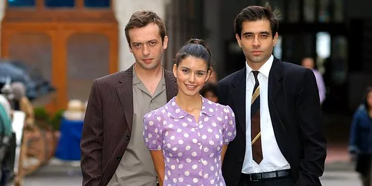

Hatırla Sevgili, 2006-2008 yılları arasında atv'de yayınlanan dram ve romantik türdeki Türk televizyon dizisidir. 2 sezondan oluşan dizi, 68. bölümü ile final yaparak sona erdi.
Dizinin hikâyesi siyasi görüşlerinin farklılıkları sebebiyle araları açılmış iki eski dost olan Rıza ve Şevket'in çocuklarının birbirlerine aşık olmasını ve aşklarının ilgili dönemin siyasi gelişmeleriyle nasıl etkilendiğini anlatmaktadır. İlk sezonda bu aşkla birlikte, 27 Mayıs Darbesi öncesi, Adnan Menderes'in uçak kazası, 27 Mayıs Darbesi, Adnan Menderes'in idam edilişi ve 27 Mayıs Darbesi sonrası günleri aktarırken, karakterlerin üzerinden konu ilerlemiş ve ilk sezonun ikinci kısmından itibaren konu 1960'ların sonları ve 1970'lerin başlarındaki sol öğrenci grupları ve daha sonrasında yaşanan çeşitli siyasi gelişmelere ve olaylara (örneğin 12 Mart Muhtırası gibi) yer vermiştir. Dizinin bölümleri sırasında sık sık dönemin yayın organlarının haberlerinden kesitler sunulur. Dizide Rıza Ünsal karakteriyle demokrat partililerin çektiği sıkıntılara dikkat çekilirken, Defne, Deniz, ve Harun karakterlerle devrimcilerin yüzleşmek zorunda olduğu durumlara dikkat çekilir.
Büyükada'da birlikte büyüyen ve çocukluk dönemlerinde arkadaş olan olan Şevket Gürsoy ve Rıza Ünsal zaman içinde farklı politik görüşler edinmişler, Şevket CHP taraftarı bir savcı olurken Rıza Demokrat Parti mensubu bir milletvekili olmuş, bu da aralarında zamanla belirli bir husumetin doğmasına yol açmıştır. Dizi Şevket'in oğlu Ahmet Gürsoy ve Rıza'nın kızı Yasemin Ünsal'ın birbirlerine aşık olup bir ilişkiye başlamalarını, ve aileleri ile dönemin siyasi gerilimine karşı mücadelelerini konu ederken, dönemin siyasi olaylarını da konu edinir ve belli başlı olayları karakterlerle ilişkili bir biçimde hikâyeye dahil eder. Çeşitli ayrılıklardan sonra Ahmet ile Yasemin sonunda yeniden birleşip evlenirler fakat hikâye bu noktada Ahmet ile Yasemin'in ilişkisi dışında çeşitli ilişkilere odaklanmaya başlamıştır: ikisi de sol görüşlü olan Yasemin'in erkek kuzeni Deniz ile Ahmet'in kız kardeşi Defne'nin, Yasemin'in Işık isimli kız kardeşi ile sağ görüşlü bir genç olan Yaşar'ın ilişkisi ve ardından çocukluk arkadaşı Harun ile evlenmeye karar vermesi gibi çeşitli ilişkiler üzerinden 1960'ların sonu ve 1970'lerin başında gelişen sağ ve sol öğrenci hareketleri ve bu hareketler arasındaki gerilim ile 1960'ların sonu 1970'lerde süren diğer siyasi olaylar konu edilir. Ayrıca 12 Eylül Darbesini ve darbenin oluşum sürecini de anlatmış ve dizi 68. bölümde Erdal Eren'in idam edilişi ve tüm karakterlerin Büyükada'da toplanmasıyla son bulmuştur.
Dizinin özgün müzikleri Kemal Sahir Gürel, Hüseyin Yıldız ve İbrahim Karaca tarafından hazırlanırken, Eylem Aktaş ve Erdal Güney tarafından seslendirilmiştir. Dizide, dizi için üretilmiş özgün müziklerin yanı sıra gerek o dönemin gerekse daha önceki dönemlerin klasiklerine de zaman zaman yer verilir.